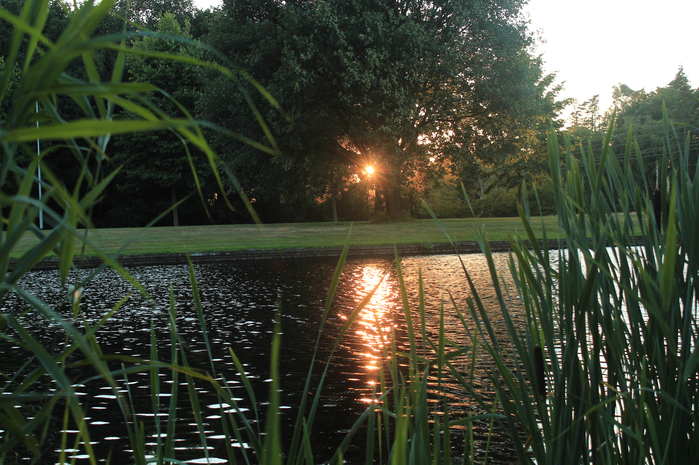

Winkelcentrum De Hooge Meeren
 In en om het winkelcentrum De Hooge Meeren in Hoogezand ben je verzekerd van een dagje plezier.
Ze hebben ongeveer +/- 100 winkels en dat allemaal onder 1 dak!
De kracht van het winkelcentrum zit hem in het complete aanbod dat we kunnen bieden voor jong en oud.
Je kan gezellig naar de bioscoop, lekker eten of shoppen bij meerdere kledingwinkels voor man,vrouw en kids.
In en om het winkelcentrum De Hooge Meeren in Hoogezand ben je verzekerd van een dagje plezier.
Ze hebben ongeveer +/- 100 winkels en dat allemaal onder 1 dak!
De kracht van het winkelcentrum zit hem in het complete aanbod dat we kunnen bieden voor jong en oud.
Je kan gezellig naar de bioscoop, lekker eten of shoppen bij meerdere kledingwinkels voor man,vrouw en kids.
Rondje door het gorechtpark

het park is 50 hectare groot, en is voor iedereen te bereiken. er zijn parkeerplaatsen waar je je auto kwijt kan zodat je
er gemakelijk een rondje kan lopen. het park is ook rolstoel vriendelijk doordat er overal verharde paden liggen.
in het park ligt een hertenkamp, kinderboederij, tennisveld, voetbalveldje en een plek waar je kunt basketballen. er is in het park
ook een vijver die in de winter wordt gebruikt om op te schaatsen en in de lente/zomer door de vissers gebruikt wordt als vissersplek
in 2006 á 2007 werdt het park een beetje heringericht, een deel van het hertenkamp werdt omgebouwd tot een natuur en milieu educatie centrum
(ook wel het NME genoemd) met een natuurtuin, speeltuin, moestuintjes etc. waarinder mee studenten en scholieren kunnen leren omgaan met de natuur.
voor meer informatie kijk op www.nme-hs.nl